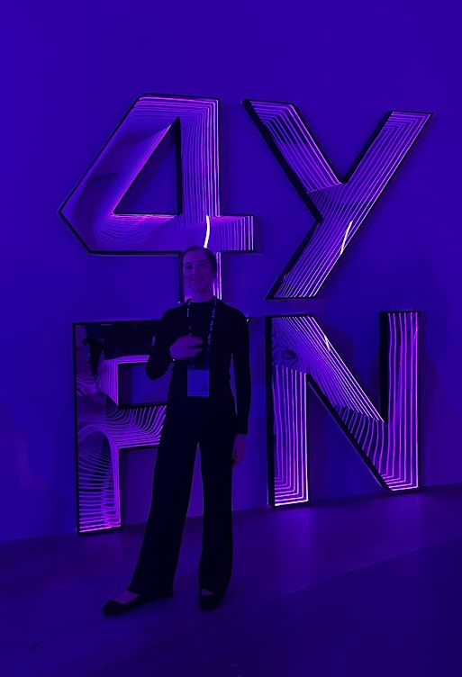
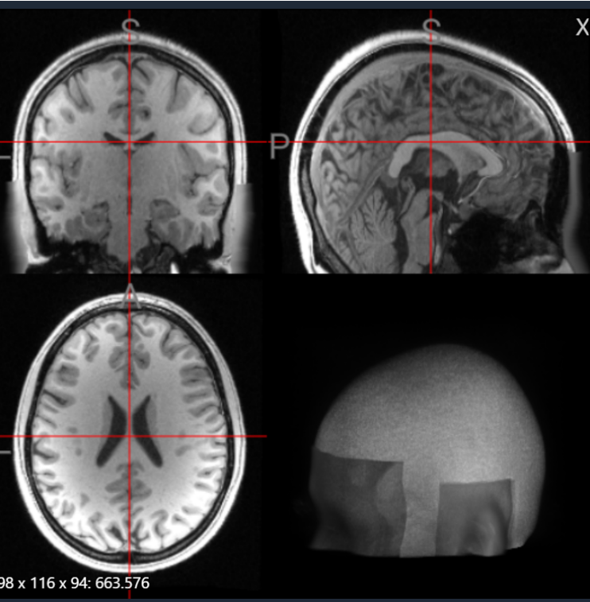
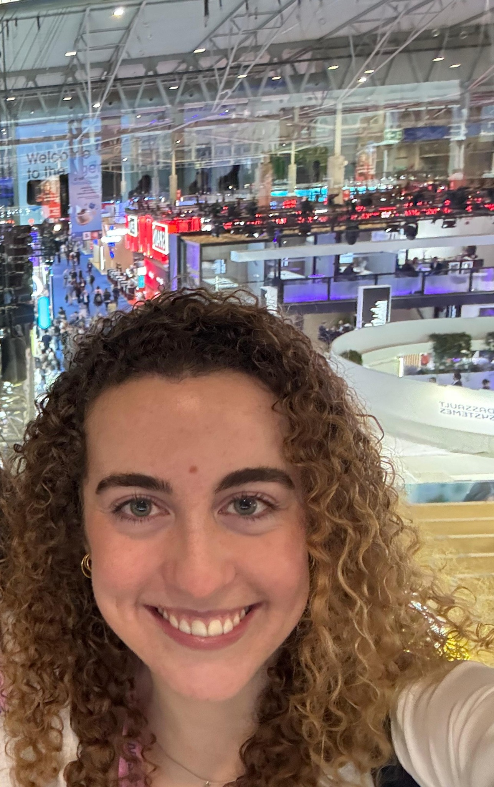

Exploring the intersection of
engineering, neuroscience and healthcare.
Hi! I'm Carla, a Biomedical Engineer currently pursuing an MSc in Neuroengineering and Rehabilitation. I'm curious about how engineering and science can come together to solve medical challenges. I enjoy exploring new ideas, learning across disciplines and developing technologies that can make a real difference in healthcare. Here are some of the projects I've worked on so far!